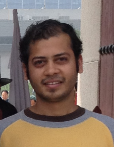

Rohan Gandhi
I am currently at Microsoft Research, India. Prior, I completed my Ph.D. from Purdue University advised by Prof. Y. Charlie Hu. I am broadly interested in computer systems and networks. I can be reached at rohangandhi@microsoft.com. My publications and patents are below.
Publications
- Rohan Gandhi, Srinivas Narayana KnapsackLB: Enabling Performance-Aware Layer-4 Load Balancing , ACM CoNEXT'25
- Bhaskar Kataria, Palak LNU, Rahul Bothra, Rohan Gandhi, Debopam Bhattacherjee, Venkata N Padmanabhan, Irena Atov, Sriraam Ramakrishnan, Somesh Chaturmohta, Chakri Kotipalli, Rui Liang, Ken Sueda, Xin He, Kevin Hinton Saving Private WAN: Using Internet Paths to Offload WAN Traffic in Conferencing Services , ACM CoNEXT'24
- Aryan Taneja, Rahul Bothra, Debopam Bhattacherjee, Rohan Gandhi, Venkata N Padmanabhan, Ranjita Bhagwan, Nagarajan Natarajan, Saikat Guha, Ross Cutler Don't Forget the User: It's Time to Rethink Network Measurements , ACM HotNets'23
- Rahul Bothra, Rohan Gandhi, Ranjita Bhagwan, Venkata N Padmanabhan, Rui Liang, Steve Carlson, Vinayaka Kamath, Sreangsu Acharyya, Ken Sueda, Somesh Chaturmohta, Harsha Sharma Switchboard: Efficient Resource Management for Conferencing Services , ACM SIGCOMM'23
- Mina Tahmasbi Arashloo, Pavel Shirshov, Rohan Gandhi, Guohan Lu, Lihua Yuan, Jennifer Rexford A Scalable VPN Gateway for Multi-Tenant Cloud Services , SIGCOMM CCR'18
- Akshay Jajoo, Rohan Gandhi, Cheng-Kok Koh, Y. Charlie Hu Saath: Speeding up CoFlows by Exploiting the Spatial Dimension , CoNEXT'17
- Rohan Gandhi, Ori Rottenstreich, Xin Jin Catalyst: Unlocking the power of choice to speed up the network updates, CoNEXT'17
- Akshay Jajoo, Rohan Gandhi, Y. Charlie Hu Graviton: Twisting space and time to speed up CoFlows, HotCloud'16
- Rohan Gandhi, Y. Charlie Hu, Ming Zhang Yoda: Highly available layer-7 load balancer, Eurosys'16
- Rohan Gandhi, Hongqiang Liu, Y. Charlie Hu, Cheng-Kok Koh, Ming Zhang Rubik: Unlocking the power of locality and end-Point flexibility in cloud scale load-balancing, Usenix ATC'15
- Rohan Gandhi, Hongqiang Liu, Y. Charlie Hu, Guohan Lu, Jitu Padhye, Lihua Yuan, Ming Zhang Duet: Cloud scale load-balancing using hardware and software, ACM SIGCOMM'14
- Xin Jin, Hongqiang Liu, Rohan Gandhi, Srikanth Kandula, Ratul Mahajan, Jennifer Rexford, Roger Wattenhofer, Ming Zhang Dionysus: Dynamic scheduling of network updates, ACM SIGCOMM'14
- Rohan Gandhi, Di Xie, Y. Charlie Hu PIKACHU: How to rebalance load in optimizing MapReduce, Usenix ATC'13
- Rohan Gandhi, Aayush Gupta, Anna Povzner, Wendy Belluomini, Tim Kaldewey Mercury: bringing efficiency to key-value stores, Usenix/ACM Systor'13
- Rohan Gandhi, Chih-Chun Wang, Y. Charlie Hu Fast rendezvous for multiple clients for cognitive radios using coordinated channel hopping. IEEE SECON'12
- Rohan Gandhi, Dimitrios Koutsonikolas, Y. Charlie Hu: Multicasting MDC videos to receivers with different screen resolution . SIGMETRICS Performance Evaluation Review 2011. (Poster)
- Rohan Gandhi, Meilin Yang, Dimitrios Koutsonikolas, Y. Charlie Hu, Mary L. Comer, Amr Mohamed, Chih-Chun Wang The impact of inter-layer network coding on the relative performance of MRC/MDC WiFi media delivery. NOSSDAV'11
Preprints
- Palak, Rohan Gandhi, Karan Tandon, Debopam Bhattacherjee, Venkata N. Padmanabhan Improving training time and GPU utilization in geo-distributed language model training
Patents
- Rohan Gandhi, “Capacity and performance aware load balancer selection”, US Patent App. 18/479,427
- Rohan Gandhi, Venkata N. Padmanabhan, “Capacity aware load packing for layer-4 load balancer”, US Patent App. 18/199,110
- Rohan Gandhi, “End-to-end performance aware traffic engineering for internet peering”, US Patent 11,843,533
- Sachin Pandey, Rohan Gandhi, Sreeram Iyer, Santosh Pallagatti Kotrabasappa, Sairam Veeraswamy, “Capacity-aware layer-4 load balancer”, US Patent 11,757,983
- Rohan Gandhi, Avinash Nigam, “Alleviating flow congestion at forwarding elements”, US Patent 11,843,543
- Rohan Gandhi, “Access control lists rules reduction”, US Patent 12,047,380
- Rohan Gandhi, Avinash Nigam, Sandip Shah, Philip Brighten Godfrey, Ambarish P Pande, Gourab Ghosh, Prashant Jain, Shashank Ranjan, “Emulating packet flows to assess network links for SD-WAN”, US Patent 11,601,356
- Rohan Gandhi, Avinash Nigam, Sandip Shah, Philip Brighten Godfrey, Ambarish P Pande, Gourab Ghosh, Prashant Jain, Shashank Ranjan, “Emulating packet flows to assess network links for SD-WAN”, US Patent 11,929,903
- Rohan Gandhi, Avinash Nigam, Madan Singhal, “Generating network flow profiles for computing entities”, US Patent 11,165,676
- Rohan Gandhi, Shachar Raindel, Jitu Padhye, Daniel Firestone, Lihua Yuan, “Load balancing in distributed computing systems”, US Patent 10,652,320
- Ming Zhang, Rohan Gandhi, Lihua Yuan, David A Maltz, Chuanxiong Guo, Haitao Wu, “Switch based load-balancer”, US20150271075
Experience
- Microsoft Research, Redmond with Ming Zhang and Jitu Padhye, March'13 - March'14, Dec'14 - Dec'15.
- IBM Research, Almaden with Anna Povzner and Wendy Belluomini, May'12 - Aug'12.
- Distributed System and Networking Lab, Purdue University, Jan'11 - May'16
- ECE469: Operating Systems, Purdue University, Spring'14
- ECE270: Intro. to Digital Design, Purdue University, Fall'10 and Spring'11
- Cypress Semiconductor, Bangalore and San Jose, May'09 - May'10